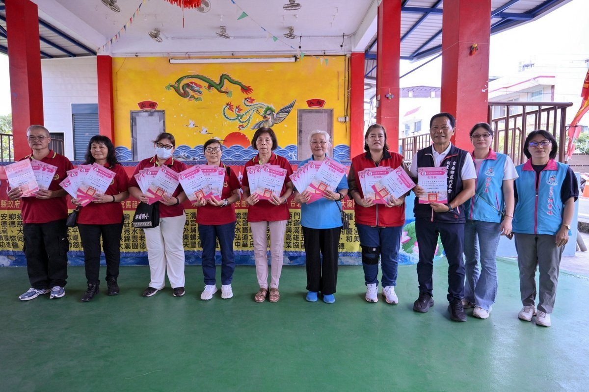

35宮廟跨縣市寒冬送暖吉安 游淑貞謝330份物資助弱勢

可樂電子報小編/編輯
花蓮縣鎮福宮媽祖文化發展協會攜手中華民國泓德志業協會等35個宮廟、公益團體及善心人士，跨縣市串聯愛心力量，將宗教信仰轉化為實際公益行動。日前於福興村鎮福宮舉辦愛心物資發放活動，準備330份生活物資，提供吉安鄉10村中低收入戶、邊緣戶及弱勢家庭，讓愛心資源及時送達有需要的家戶。鄉公所團隊也特地到場致贈感謝狀，代表受惠鄉親感謝各界善心支持。

泓德志業協會理事長施綉嬪表示，協會長期串聯西部各縣市超過80間宮廟，持續將愛心送往花東偏鄉，幾乎每月都赴花蓮辦理物資捐贈，每次約發放300至600份。此次物資從募集、整理到運送，歷經兩天兩夜籌備，終於順利完成任務。未來只要地方有需求，協會都會持續投入公益募集，將關懷送到需要的角落。

施綉嬪也肯定鄉長游淑貞長期投入社會救助與福利工作的用心，從學童獎助、急難救助到弱勢家庭訪視，展現公所團隊積極服務的精神。此次活動特別感謝鎮福宮媽祖文化發展協會理事長黃朝彬、各村村長及公所團隊共同協力，讓物資能精準送達有需要的家庭。

福興村長黃駿緯表示，這項愛心捐贈活動已邁入第二年，今年參與單位較去年增加7家宮廟團體，展現民間公益力量對花東偏鄉及吉安弱勢家庭的關懷。感謝各界熱心響應，也期盼這份善意持續傳遞，長久陪伴弱勢村民及需要協助的家庭。

泓德志業協會花蓮愛心活動副執行長駱燕玲表示，感謝泓德志業協會及各宮廟、慈善團體與善心人士發起秋冬送暖行動，當日上午已在秀林鄉發放300份物資，下午隨即接續前往吉安鄉。活動也有吉安青年會協助長者及行動不便鄉親搬運物資上車，社區巡守隊則協助交通指揮與現場秩序維護，展現公私部門攜手合作、傳遞溫暖的力量。

鄉長游淑貞表示，民間善心是推動社會福利的重要後盾，宗教信仰不僅是心靈寄託，更能凝聚善念、實踐公益。感謝全國各地宮廟、公益團體及善心人士以實際行動關懷弱勢，補足公部門資源，共同促進社會互助與祥和。未來公所將持續深化公私協力，逐步建構全年性的物資援助與關懷網絡，讓愛心不只在節慶期間傳遞，更成為日常守護弱勢家庭的力量，共同打造溫暖共好的幸福吉安。
📸 更多現場紀實影像


🌟 掌握花蓮在地第一手資訊・歡迎訂閱追蹤
深度紀實報導、在地精采影音專題，第一時間接收最新消息！